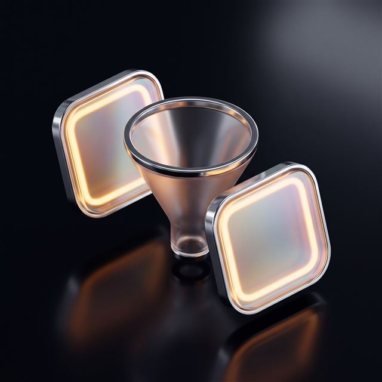
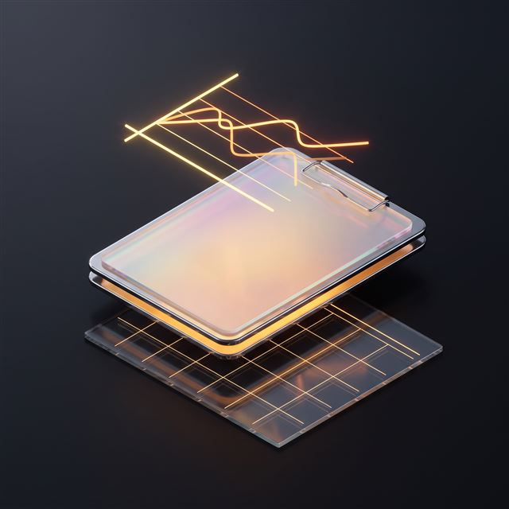

Digital Marketing Agency: Google Ads, Meta Ads and Performance Marketing
GOOGLE ADS · META ADS · PERFORMANCE MARKETING · SOCIAL MEDIA
TasarımMania is a digital marketing agency that takes on your business's online growth end to end, bringing Google Ads, Meta Ads, performance marketing and social media management into one team. We run the whole process, from defining the audience to producing the creative, from conversion tracking to budget optimization; the aim isn't clicks, it's measurable sales and new customers.
↑ PRESS THE ADVERT OR THE BUTTON — ITS COUNTERPART LIGHTS UP IN CONVERSION
The audience at the intersection: has seen your site AND is active in search.
- ad_click
- form_submit
- phone_click
Which click turned into a sale is tracked from day one.
The advert, the audience and the measurement are set up at the same time; the budget doesn't drain into a blind spot.
time
one team
in web and software
measurement accounts
What this service covers: Google Ads, Meta Ads, performance and social media
This page brings four services under one roof. We decide together which combination makes sense for your sector, your budget and your goals.
Google Ads: Search and Display Advertising
The fast, measurable channel that puts you in front of people at the moment they search.
- Keyword research and campaign structure
- Display and shopping ads
- Conversion tracking and bid optimization
- Targeting based on competitor analysis
Meta Ads: Facebook and Instagram Advertising
Management that reaches the right audience with the right creative, growing awareness and sales together.
- Audience segmentation and pixel setup
- Ad creative planning
- Optimization through A/B testing
- Remarketing structure
Performance Marketing: Conversion and Funnel Management
An approach that brings every channel's data together and makes decisions on conversions.
- A channel-agnostic conversion funnel
- All the data brought into one report
- Tracking acquisition cost and lifetime value
- Steering the budget to the channel that performs
Social Media Management: Continuous Content and Advertising
Management that keeps your account alive with a mix of organic content and paid support.
- Content calendar and post/Reels production
- Account engagement and community management
- Supporting organic content with advertising
- Regular growth and engagement reporting
Let's work out which channel suits you, togetherFive steps, two minutes. The scope and budget band appear on screen.
Digital marketing costs in 2026: the setup and monthly management band
This isn't a one-off delivery, it's an ongoing service: setup (account creation, audiences, creative, conversion tracking) takes 2–3 weeks; after that the service runs on a monthly management fee. The ad budget itself isn't included in that fee and is paid separately. What sets the fee:
- The number of channels managed: one, or all four
- The scope of the setup: account creation, targeting, creative, conversion tracking
- The creative production load and the reporting frequency
- How competitive the sector is and how wide the target market is
- The ad budget is a separate line item; it's paid directly to the relevant account
- The service isn't one-off — it runs on a monthly management model
We don't give guarantees of a definite result — we've explained why below. We start the conversation by mapping the scope. Every claim in an advert has to stand up to scrutiny; commercial advertising rules draw the line.
What's included, what isn't?
Included in the price
- Account creation and technical setup (pixel, conversion tags)
- Audience and competitor analysis
- Campaign structure and creative direction
- Regular optimization and bid adjustments
- Monthly performance report and strategy call
- A social media content calendar, depending on the package chosen
Separate line item
- The Google Ads and Meta Ads budget itself
- Professional photography or video shoots (quoted separately on request)
- Influencer collaborations and product seeding
- Technical changes to the website or e-commerce platform
See your project's band on screenOnly your name and phone number are required.
We Offer Transparency, Not Guarantees
The promise you hear most in this industry is a guaranteed result; we don't make it, because it isn't realistic. Algorithms change constantly, and competition and product-market fit are outside an agency's control. What's different about us: every month we show you with open data what's working, and we set realistic targets.
Frequently asked questions: digital marketing costs, contracts and reporting
The questions that come up most, with short answers.
What exactly does a digital marketing agency take on?
We run Google Ads, Meta Ads, performance marketing and social media management end to end.
We take on the whole process, from setup to creative production to conversion tracking, and add social media management on request.
What sets digital marketing prices?
It's set by the number of channels managed, the scope and the reporting frequency; we've listed what sets the price one by one above.
Setup is a separate stage; the exact figure is stated in the quote once we've mapped the scope together.
Is the ad budget included in the agency fee, or paid separately?
No, the ad budget is paid separately; it isn't included in the monthly management fee.
The monthly fee covers the strategic and operational work; the ad budget is spent directly from your account and kept separate.
Whose name are the advertising and measurement accounts opened in?
The accounts are always opened in your business's name and the ownership stays with you.
Accounts are opened in your business's name, or we get administrator access to an existing one; even when the service ends, the data stays with you.
Do you guarantee a particular number of conversions or a particular result?
No; no agency can guarantee a definite result, and we don't either.
Algorithms and competitive conditions are outside an agency's control; rather than committing to a figure we set realistic targets.
How many months is the digital marketing contract, and is there an early exit?
The service runs on a monthly management model; once setup is complete it continues month by month.
The contract is built around monthly management; termination terms are settled in the discussion.
How often do you report, and on which metrics?
We report every month; conversion, cost and engagement metrics are all in the report.
Every month we share the spend, conversion and engagement data and set the next month's priorities together.
Is Google Ads or Meta Ads a better fit for us, and how is that decided?
The decision comes down to whether your audience behaves more like searchers or more like social media users.
Where search intent is high, Google Ads comes forward; where awareness matters, Meta Ads does — and for most businesses the two are run together.
Other modules
Web Design & Software The ground the other four modules stand on. Mobile Apps iOS and Android; a shared API and design system with the web. Video Production Ad, Reels and product video from a single shoot. SEO Services Technical SEO, content and local visibility.If you'd like to look before deciding
The setup process, reporting, sectors and contract terms — all here. Open it, read it, close it.
What Happens During Setup?

First we analyse your business and your competitors; then we open the accounts, set up conversion tracking and prepare the first creatives. Once that's done the campaigns go live; setup typically takes 2–3 weeks.
How Do Reporting and Communication Work?

Alongside the monthly report we hold regular strategy calls; you deal with a single point of contact and you're told before anything changes.
Which Sectors Is This Suitable For?
We work across a wide range, including e-commerce, services, healthcare, education and corporate businesses; where your sector has its own restrictions, we adapt the structure accordingly.
Who Produces the Creative (Images/Video)?
Ad copy and creative direction are part of the service; if a professional shoot or video production is needed, it's planned under a separate quote.
Contract and Termination Terms
The service is based on continuous monthly management; the contract and termination terms are settled in the quote discussion, following the flow set out in the pricing section.
Google Ads · Meta Ads · Performance
Let's Build Your Digital Marketing Process Together
A short call is enough to settle which channel will work for your business, on what budget and towards what goals.